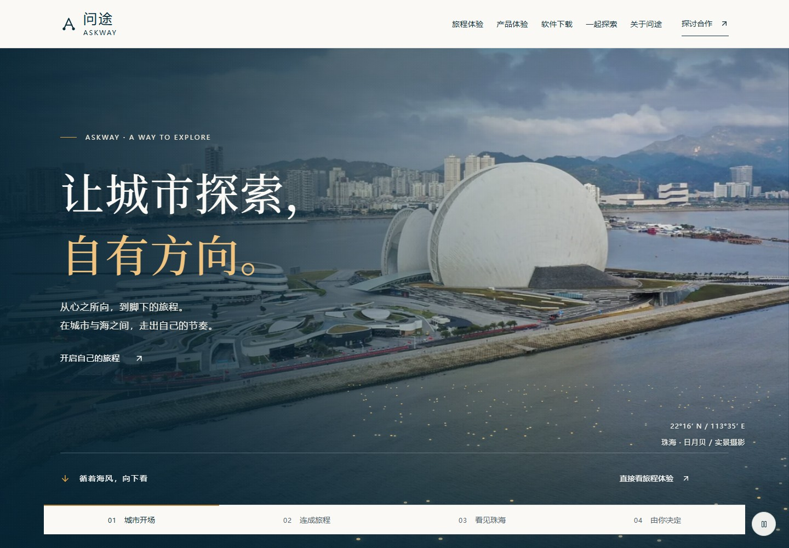
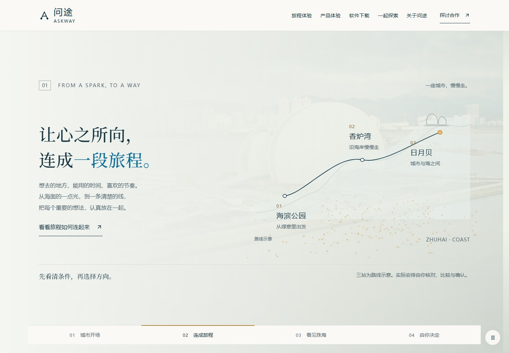
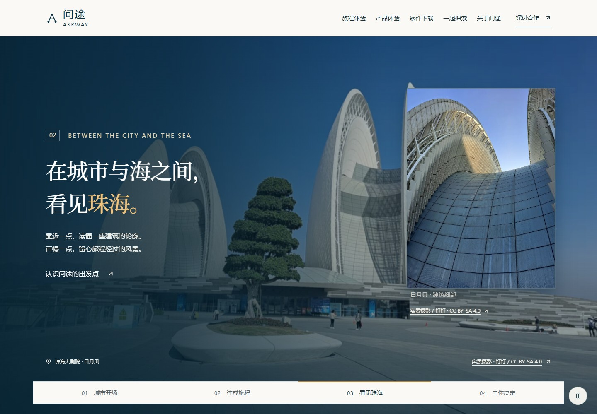
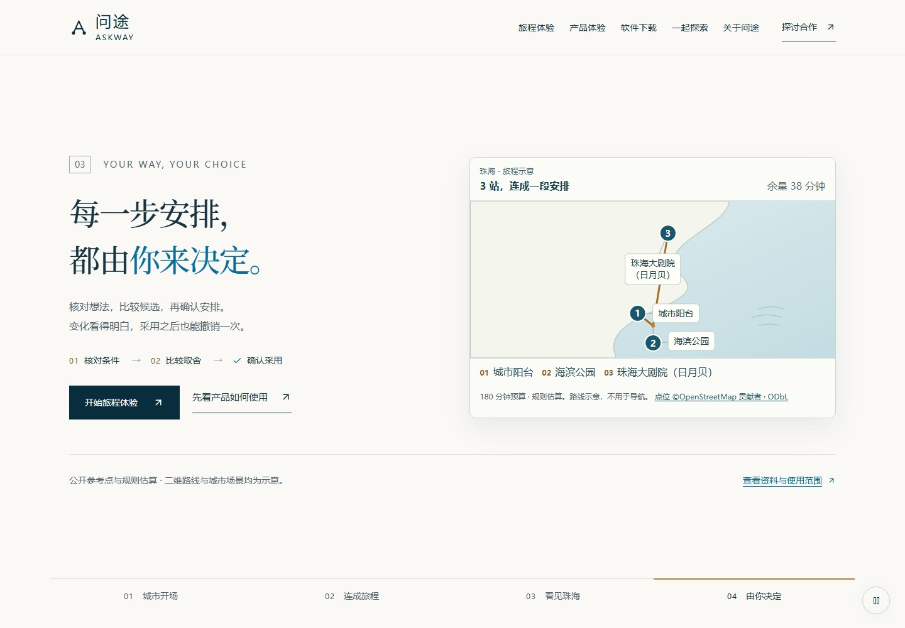
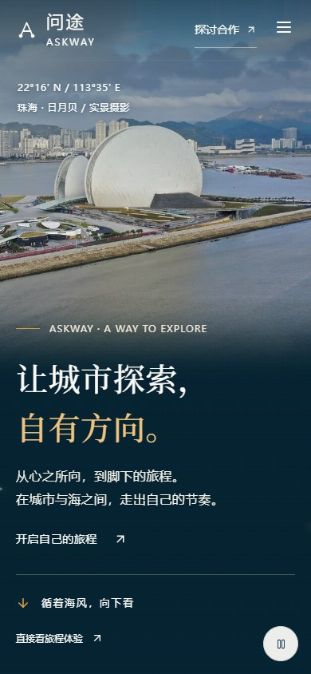
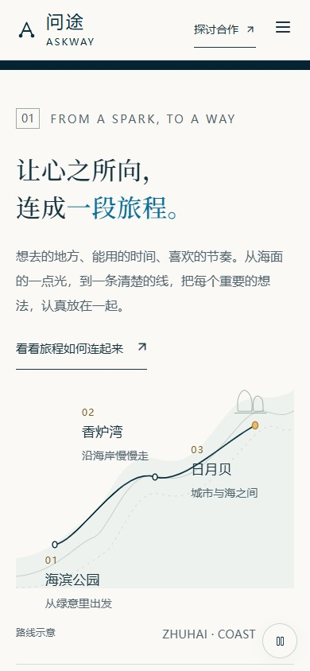
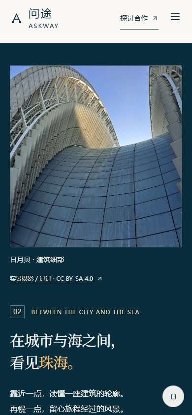
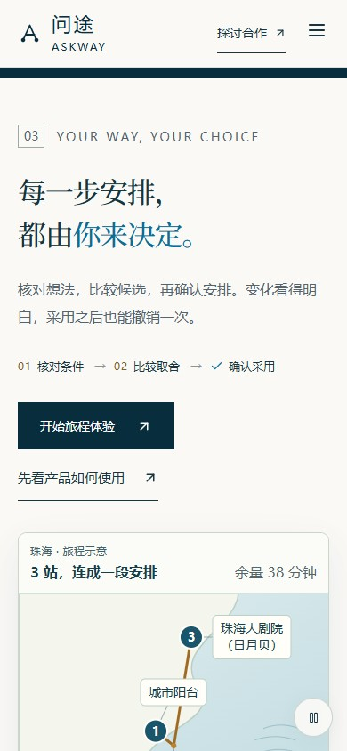

摄影转场 · 正滚与倒滚
本地 Edge 桌面与手机视口模拟。桌面使用 Playwright 浏览器协议发送原生 wheel 输入；手机记录静态 HTML 阅读。以下是带时间戳截图序列与离线浏览页，不是视频。截图、等待图片解码及取样有额外开销，不用于帧性能结论。
首页文档 SHA-256：6e40284d6c6e10aa98019f93a9683fc7c4da69c12c9b8f10df0d85ac6d523632。完整元数据与输入记录
desktop / forward / city

2026-11-27T17:27:11.727Z
layout=sticky, p=0.0800, requested=0.08
desktop / forward / route

2026-11-27T17:27:13.456Z
layout=sticky, p=0.3600, requested=0.36
desktop / forward / theatre

2026-11-27T17:27:15.222Z
layout=sticky, p=0.6600, requested=0.66
desktop / forward / product

2026-11-27T17:27:17.005Z
layout=sticky, p=0.9850, requested=0.985
desktop / reverse / product

2026-11-27T17:27:17.099Z
layout=sticky, p=0.9850, requested=0.985
desktop / reverse / theatre
2026-11-27T17:27:18.863Z
layout=sticky, p=0.6600, requested=0.66
desktop / reverse / route
2026-11-27T17:27:20.626Z
layout=sticky, p=0.3600, requested=0.36
desktop / reverse / city
2026-11-27T17:27:22.297Z
layout=sticky, p=0.0800, requested=0.08
mobile / reading / city

2026-11-27T17:27:23.771Z
layout=static, p=0.0000, requested=normal HTML reading
完整静态章节截图mobile / reading / route

2026-11-27T17:27:24.409Z
layout=static, p=0.2654, requested=normal HTML reading
完整静态章节截图mobile / reading / theatre

2026-11-27T17:27:25.032Z
layout=static, p=0.5699, requested=normal HTML reading
完整静态章节截图mobile / reading / product

2026-11-27T17:27:25.627Z
layout=static, p=0.8817, requested=normal HTML reading
完整静态章节截图同进度构图参数
[
{
"phase": "city",
"forwardProgress": 0.08,
"reverseProgress": 0.08,
"progressDifference": 0,
"exactCssMatch": true,
"differences": [],
"note": "Compare geometry-derived CSS at the recorded positions. Particle activeTime and image pixels may differ with time; this is not a pixel-identical animation assertion."
},
{
"phase": "route",
"forwardProgress": 0.36,
"reverseProgress": 0.36,
"progressDifference": 0,
"exactCssMatch": true,
"differences": [],
"note": "Compare geometry-derived CSS at the recorded positions. Particle activeTime and image pixels may differ with time; this is not a pixel-identical animation assertion."
},
{
"phase": "theatre",
"forwardProgress": 0.66,
"reverseProgress": 0.66,
"progressDifference": 0,
"exactCssMatch": true,
"differences": [],
"note": "Compare geometry-derived CSS at the recorded positions. Particle activeTime and image pixels may differ with time; this is not a pixel-identical animation assertion."
},
{
"phase": "product",
"forwardProgress": 0.985,
"reverseProgress": 0.985,
"progressDifference": 0,
"exactCssMatch": true,
"differences": [],
"note": "Compare geometry-derived CSS at the recorded positions. Particle activeTime and image pixels may differ with time; this is not a pixel-identical animation assertion."
}
]未测真实触摸、真实手机 GPU、Safari 或真实 INP。拍攝记录与独立 --measure 数据分开。